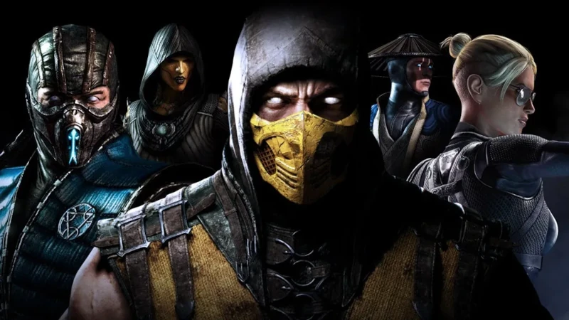

Mortal Kombat está de vuelta mejor que nunca con la siguiente evolución de la emblemática franquicia.
El nuevo motor gráfico muestra a la perfección cada fractura de cráneo y cada desprendimiento ocular, lo que te acerca tanto al combate que puedes sentirlo traspasar la pantalla.
Junto con el regreso de los Fatalities y Brutalities, se introducen nuevas características de juego, como Fatal Blows y Krushing Blows
Otro finalizador que regresa es Mercy, visto por última vez en Mortal Kombat 3, donde el jugador ganador puede optar por revivir a su oponente, dándole una pequeña cantidad de vida.
Te dejamos un video de como hacer un mercy. Muestrate compasivo al dar a tu oponente una segunda oportunidad de seguir luchando en vez de finalizar el combate inmediatamente.
Junto con los personajes clásicos de la serie como Baraka, Raiden, Scorpion, Sonya Blade y Sub-Zero, y otros como Skarlet, tenemos en total 37 personajes para pelear. ¡Esta entrega viene con 4 luchadores nuevos!
Animate y divertite con el modo multijugador online y offline para compartir con amigos
ADVERTENCIA: Este juego esta clasificado como +18